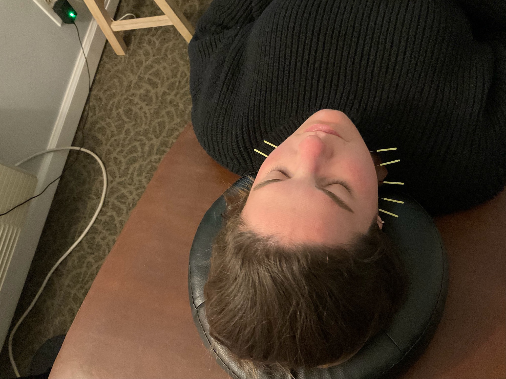
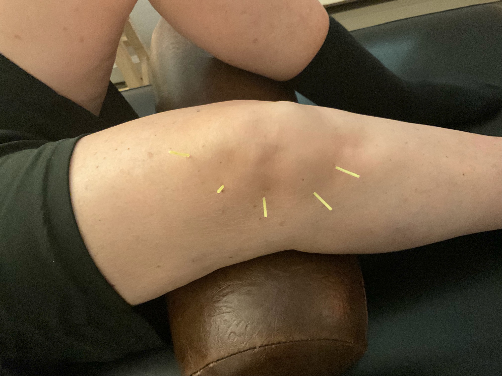
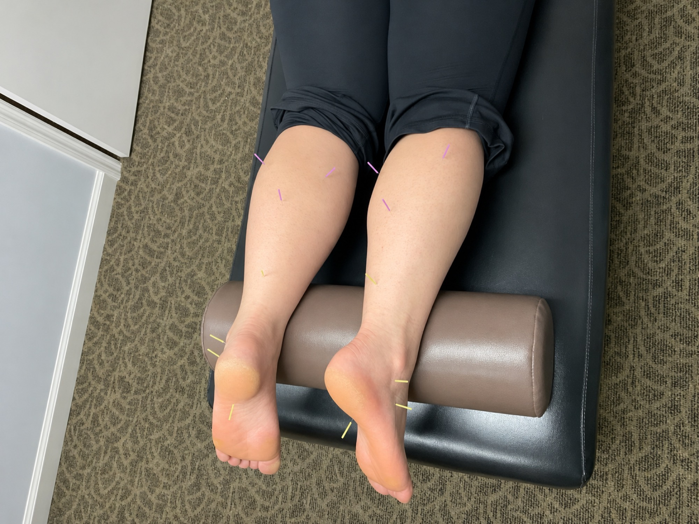
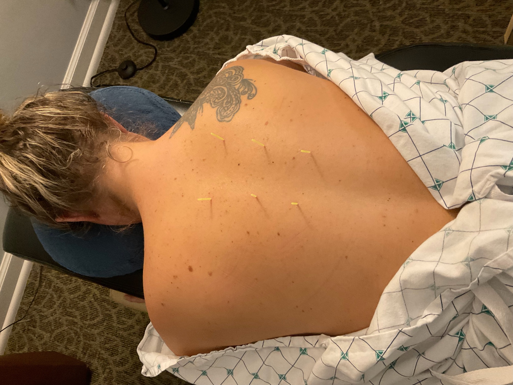

How does it work?
A very fine filament needle is inserted through the skin into deeper tissues at trigger points.
Dry needling care
Learn about the procedure and what questions to discuss before scheduling.





A very fine filament needle is inserted through the skin into deeper tissues at trigger points.
Dry needling may be used for neck, back, and shoulder pain; arm pain such as tennis elbow and carpal tunnel; headaches and migraines; jaw pain; and leg pain such as sciatica, hamstring strains, and calf tightness.
Most patients do not feel the fine filament needle being inserted. Some may notice a brief sensation or soreness afterward. Responses vary.
We're here to help you get started